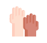

Objetivos Plan de Bienestar al Aprendiz
Objetivo estratégico 1
Implementar estrategias de acompañamiento para el desarrollo integral del aprendiz en su proceso formativo.
Objetivo estratégico 2
Incentivar al aprendiz en su proceso de formación profesional integral mediante la implementación de un programa de estímulos.
Objetivo estratégico 3
Entregar con oportunidad y calidad los servicios de bienestar al aprendiz documentando procedimientos que soporten una operación ágil y flexible.
Desarrollo integral del aprendiz
Son acciones de acompañamiento a los aprendices en temas relacionados con:
cultura, a las prácticas de prevención de la enfermedad y promoción de la salud,
al desarrollo de habilidades blandas, al deporte, la actividad física, el aprovechamiento del tiempo libre
y el arte.
Programa de estímulos
Son estrategias para el reconocimiento al esfuerzo en el proceso formativo
y un impulso para la excelencia generando escenarios de reconocimiento para aprendices
en ejes de liderazgo, proyección social, formación y de talentos. Los apoyos socioeconómicos son:
apoyo regular, FIC, alimentación, transporte, plan de datos, monitorias y centros de convivencia
¿Quiénes pueden acceder al Plan de Bienestar al Aprendiz?
Aprendices matriculados en formación Laboral y Formación tecnológica,
de todos los niveles y jornadas, en sus diferentes modalidades: presencial, virtual o a distancia.
Los Centros de Formación Profesional Integral incorporarán estrategias para la inclusión de aprendices
pertenecientes a las comunidades minoritarias y vulnerables

¿Cómo acceder a los servicios del plan de bienestar al aprendiz en tu centro de formación?
Los aprendices pueden consultar en los centros de formación directamente
con los profesionales de bienestar al aprendiz.
¿Qué beneficios ofrece el Plan de Bienestar al Aprendiz?
Consolida proyectos de vida.
Motiva la culminación exitosa del proceso formativo.
Promueve hábitos de vida saludables.
Fortalece las habilidades blandas de los aprendices.